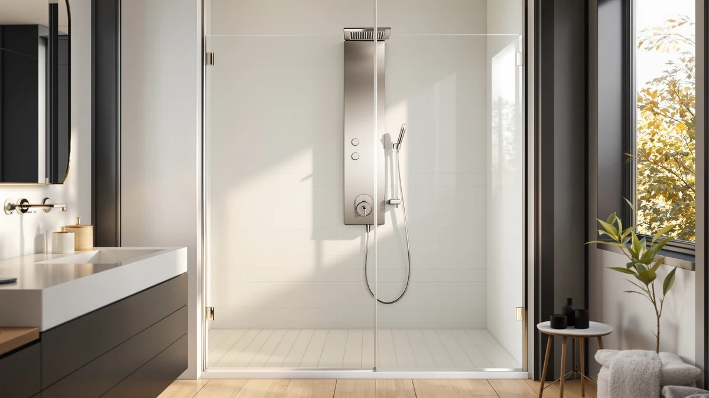

Best Rated Shower Panel System (2026)
Prices and picks verified as of August 2026. Independent, reader-supported reviews.


Quick Answer
A shower panel system is a wall-mounted tower that replaces your single showerhead with a rainfall head, dedicated body jets and a handheld sprayer built into one unit. After comparing jet pressure, material and price across seven towers, the VEVOR Shower Panel System 5 is our pick for the best rated shower panel system for most bathrooms: it delivers five spray modes and anti-clog silicone nozzles for $118.90, a fraction of what the premium aluminum towers on this list cost.
Our pick: VEVOR Shower Panel System 5, $118.90 Check Price on Amazon
Bottom line: our top pick is the VEVOR Shower Panel System at $107.01. The best budget option is the VEVOR Shower Panel Tower System at $124.69.
Things to Know Before You Buy
- Material determines lifespan. Stainless steel and brass resist the constant humidity inside a shower far better than aluminum, which can pit and discolor within a year or two of daily use.
- Jet count is not the same as jet pressure. A shower panel system with eight nozzles on weak home plumbing can feel weaker than a four-jet tower on strong pressure. Check your home's PSI before you shop by jet count alone.
- LED displays need power from somewhere. Some panels light up from water flow alone, others rely on batteries or a small wired module, and that part is usually the first thing to fail.
- You need roughly 40 PSI or higher. Below that, rainfall heads and body jets running together start to feel thin, regardless of how many functions the panel advertises.
- Installation reuses your existing plumbing. Most of these towers mount over your current hot and cold shower valve, but they are heavy, so plan for a secure wall anchor rather than a rushed weekend job.
Finding the best rated shower panel system means separating the towers with real jet pressure and durable metal bodies from the ones that are mostly a shiny showerhead with extra plastic bolted on. A shower panel replaces your single showerhead with a full column of rainfall spray, body jets and a handheld sprayer, and the gap between a good one and a bad one shows up fast: weak nozzles that clog within months, aluminum bodies that pit in a humid bathroom, and knobs that never quite land on a comfortable temperature.
We compared seven all-in-one towers ranging from $118.90 to $319 on jet count, build material, water pressure requirements and what verified buyers report after living with each one. A higher price does not automatically mean a better shower here. The VEVOR Shower Panel System 5 costs a third of the Blue Ocean unit and still delivers five spray modes with anti-clog silicone nozzles, which is why it earns our top pick for most bathrooms.
Below you will find each panel's strengths and honest drawbacks, a comparison table for a fast scan, and the products we ruled out and why. If your priority is jet count and you have the budget, the Blue Ocean pulls ahead with eight adjustable nozzles. If you want a stainless build without the premium price, the ELLO&ALLO and HSYLYPA towers are worth a closer look. For most bathrooms, though, the VEVOR Shower Panel System 5 remains the best rated shower panel system in this lineup: five real functions at the lowest price on the list.
Why You Should Trust Us
I am Ilane Tall, and I cover bathroom fixtures, including shower panels, faucets and shower systems, for Best Shower Panels. Shower panel listings on Amazon tend to blur together, with nearly identical stock photos and vague claims about spa experiences, so I focus on the details that actually separate a durable tower from a disposable one: the metal, the jet hardware, and what buyers say after months of daily use.
Nobody paid for placement in this best rated shower panel system guide. Every pick here comes from comparing manufacturer specifications, materials, pricing and verified owner reviews across the seven panels in this roundup. Where a product has a real weakness, an aluminum body, a battery-dependent light, or fussy plumbing, I say so directly, because a shower fixture is something you use daily for years, not a purchase you make once and forget.
How We Picked
We started by requiring a genuine all-in-one shower panel system: a wall-mounted tower that combines a rainfall or waterfall shower head, dedicated body massage jets and a handheld sprayer in one unit. Basic showerheads and single-function fixtures did not qualify, no matter how the listing marketed them.
From there we ranked candidates on jet count and configuration, build material, and how clearly the listing documented its specs, since a manufacturer that hides the material or the jet count behind stock photography is usually hiding a weak point. We kept the price range wide on purpose, from $118.90 to $319, so this best rated shower panel system guide covers a genuine budget option alongside a premium stainless and aluminum build for buyers who want to spend more. We also made sure common finishes, brushed nickel, brushed gold and plain stainless, all had a representative on the list, since finish is often the deciding factor once the core hardware checks out.
How We Compared
We evaluated each shower panel system the way a homeowner actually uses one. On spray, we compared how the rainfall head and body jets behave when run together, since most home plumbing sits between 40 and 60 PSI and a tower that only performs well on stronger commercial pressure disappoints most buyers. Panels with dedicated silicone or rubber nozzles that resist mineral clogging scored higher than ones with plain metal ports.
On build, we separated genuine stainless steel and brass bodies from lighter aluminum, because aluminum saves money up front but corrodes faster in a wet bathroom. We also checked how each temperature display or LED accent draws power, since a hydroelectric or self-contained system holds up longer than one that depends on a replaceable battery. Where we cite a jet count, dimension or material, it comes directly from the manufacturer's listing and verified buyer feedback, not from a testing lab we do not operate. That is how we built this best rated shower panel system comparison: from documented specs and researched owner reports, not brand loyalty.
Our Picks

VEVOR Shower Panel System 5
What we like
- Five shower modes, rainfall, waterfall, two body massage jets, handheld and tub spout, for well under $150
- LED-lit 18.1-inch top spray head switches between rainfall and waterfall
- Silicone anti-clog nozzles you clear with a fingertip instead of a tool
- 59-inch handheld hose gives real reach for rinsing kids or pets
Flaws but not dealbreakers
- Only two body massage jets, fewer than the pricier towers on this list
- VEVOR does not publish a body material spec beyond the silver finish
- Each mode runs independently rather than blending, so you switch rather than combine
| Material | — |
| Size | 2 Body Massage Jets |
The VEVOR Shower Panel System 5 is the panel we point budget-minded shoppers toward first, and the reason is simple: for $118.90 it covers five real functions, rainfall, waterfall, two body massage jets, a handheld sprayer and a tub spout, without cutting the two things that matter most, water reach and nozzle reliability. The 18.1-inch top spray head switches between a fine rainfall pattern and a stronger waterfall rinse with a single knob, and the LED lighting built into the head is a genuine extra rather than the main selling point.
Where this shower panel system earns its keep long term is the silicone nozzles on both the top spray and the body jets. Hard water leaves mineral buildup in every shower fixture eventually, and instead of needing a wrench or a replacement part, you clear these by pressing and rubbing the flexible nozzle with a finger. The tradeoff for the price is jet count: two body massage jets is fewer than the four-to-eight jet towers elsewhere on this list, and VEVOR does not spell out the body material beyond its silver finish. For most bathrooms that are not chasing a full-body massage experience, that is a reasonable compromise for the price.

Blue Ocean 52" Aluminum SPA392M
What we like
- Eight adjustable massage jets, the most of any panel in this roundup
- Slim 52 x 10 x 3.5-inch aluminum profile fits narrow shower stalls
- Smart LED temperature display takes the guesswork out of dialing in heat
- Rainfall showerhead and multi-function handheld round out a full-service setup
Flaws but not dealbreakers
- At $319 it is by far the most expensive panel in this comparison
- Aluminum construction is lighter and less rust-resistant than the stainless towers on this list
- Blue Ocean does not list a jet pressure rating, so results depend on your home's PSI
| Material | — |
| Size | — |
Blue Ocean built the 52-inch SPA392M around one number: eight adjustable massage jets, twice what most of the other towers in this shower panel system comparison offer. Owners shopping for something closer to a spa massage than a rinse are the target buyer here, and the slim 10-inch-wide, 3.5-inch-deep aluminum body means it fits shower stalls that a bulkier stainless tower would crowd. The rainfall showerhead and multi-function handheld cover the basics well, and the built-in LED temperature display removes the trial-and-error of finding a comfortable setting.
The catch is price and material. At $319, the SPA392M costs close to three times what the VEVOR System 5 does, and aluminum, while lighter and easier to mount, is more prone to pitting and corrosion over years of daily steam than the stainless bodies used by ELLO&ALLO or HSYLYPA. Blue Ocean also does not publish a jet pressure spec, so how forceful those eight jets feel in practice depends heavily on your home's water pressure. If your plumbing runs strong and jet count is the priority, this is the pick. If you are on a tighter budget or weaker pressure, a lower-jet, higher-material panel elsewhere on this list will likely serve you better.

FUZ Contemporary Shower Panel Tower
What we like
- Six functions: LED waterfall, rainfall, handheld, tub spout and massage jets
- Brass body with a brushed nickel surface resists corrosion better than thinner metals
- Display shows both water temperature in Fahrenheit and shower run time
- Multi-outlet switches let you combine functions rather than running one at a time
Flaws but not dealbreakers
- FUZMONOERE is a lesser-known brand compared to VEVOR or ELLO&ALLO
- No published jet count for the massage function, unlike the VEVOR or Blue Ocean listings
- Split-type design has more connection points and more seals that can eventually need attention
| Material | — |
| Size | — |
The FUZ Contemporary Shower Panel Tower stands out in this shower panel system lineup for two things: a genuine brass body under its brushed nickel finish, and a display that actually tells you something useful, water temperature in Fahrenheit alongside your shower run time. At $174 it sits in the middle of this roundup's price range, and the six functions, LED waterfall, rainfall, handheld shower, tub spout and massage jets, run through multi-outlet switches that let you combine modes rather than forcing you to pick one at a time.
Brass stands up to the humidity of a bathroom about as well as stainless steel does, which puts this panel ahead of the aluminum Blue Ocean on long-term durability at a lower price. The tradeoff is that FUZMONOERE does not carry the same brand recognition as VEVOR, and the listing does not specify how many massage jets the body function includes, so buyers comparing jet count directly should look at the ROVOGO or Blue Ocean instead. As a split-type system, it also has more plumbing connections than a single-unit tower, so there are more seals to keep an eye on at install and over time.

VEVOR Shower Panel Tower System
What we like
- Six shower modes, one more than the VEVOR System 5, for under $6 extra
- Four body massage jets, split into big and small nozzles, double the entry-level VEVOR
- Same anti-clog silicone nozzle design and 59-inch handheld hose as the System 5
- 3-setting handheld shower head adds flexibility the base model does not have
Flaws but not dealbreakers
- Still an aluminum-adjacent build with no stated premium material
- LED lighting is a visual extra, not a functional upgrade to spray pressure
- Each of the six modes runs independently rather than in combination
| Material | — |
| Size | 4 Massage Jets |
If the VEVOR Shower Panel System 5 is the entry point, the VEVOR Shower Panel Tower System is the small step up, and at $124.69 it barely costs more. The extra six dollars buys a sixth shower mode and doubles the body jets to four, split between big and small nozzles for a broader massage pattern than the base model's two jets. The same 18.1-inch LED top spray head switches between rainfall and waterfall, and the handheld now offers three spray settings instead of one.
Everything that makes the System 5 easy to live with carries over here: silicone anti-clog nozzles you clear by hand, a 59-inch hose with real reach, and simple knob controls. Nothing changes on the honesty side either, VEVOR still does not publish a body material spec, and like its sibling, each mode runs on its own rather than blending together. For anyone cross-shopping the two VEVOR towers in this shower panel system roundup, this one is the better buy unless the six-dollar difference matters to a tight budget.

ROVOGO LED Shower Panel Tower
What we like
- Heavy duty stainless steel body at a price closer to VEVOR's aluminum-adjacent towers
- Copper valve and ceramic cartridge for a more durable diverter than plastic valve designs
- 60-nozzle rainfall head aims for full-body coverage without turning around
- Battery-powered blue LED lights add ambiance without a wired install
Flaws but not dealbreakers
- LED lights run on batteries, not water-generated power, so they are the part most likely to eventually need attention
- 46.5-inch height is on the shorter side, worth measuring against your existing showerhead placement
- No published massage jet count beyond the general body-jet feature
| Material | — |
| Size | — |
ROVOGO built this LED Shower Panel Tower for buyers who assumed a rust-proof body meant a rust-proof price. At $129.99, it undercuts the ELLO&ALLO and Blue Ocean towers by a wide margin while still offering the heavy duty stainless construction that resists the corrosion aluminum panels are prone to. A copper valve paired with a ceramic cartridge handles the diverter duties, a more durable combination than the plastic valves found in cheaper panels.
The 60-nozzle rain shower head blankets you in coverage without requiring you to turn around, and the waterfall mode delivers a wider flow for rinsing off soap quickly. The battery-powered LED lights add a soothing blue glow, but because they run on batteries rather than water-generated power, they are the component most likely to need replacing down the line, the same tradeoff you see on the FUZ and ELLO&ALLO towers. At 46.5 inches, it also runs a bit shorter than some competitors, so measure your existing shower valve placement before buying this shower panel system.

ELLO&ALLO Stainless Steel Shower Panel
What we like
- Full stainless steel construction resists the rust and pitting aluminum panels are prone to
- Six functions including rainfall, waterfall, massage jets, tub spout and handheld
- Brass and PVC waterway construction built for long-term leak resistance
- Manufacturer gives straightforward troubleshooting guidance for pressure issues tied to filter buildup
Flaws but not dealbreakers
- At $229.97 it costs roughly double the budget VEVOR towers
- Manufacturer does not publish a specific jet count for the massage function
- Premium build means a heavier tower and a more deliberate two-person install
| Material | — |
| Size | 6 Modes |
ELLO&ALLO built this stainless steel panel for buyers who have already decided that material matters more than price. The entire tower uses premium stainless steel rather than the aluminum found in the Blue Ocean panel, and the internal waterway combines brass and PVC pipes, a combination the manufacturer specifically markets around minimizing the risk of leaks over years of daily use. Six functions, rainfall, the pull of body massage jets, a handheld sprayer and a tub spout, all live in one brushed nickel unit.
At $229.97, this shower panel system sits toward the top of this roundup's price range, second only to the Blue Ocean, and you are paying specifically for the stainless build and waterway durability rather than for extra functions or jet count, which ELLO&ALLO does not spell out precisely. The listing is also refreshingly direct about maintenance: if water pressure drops, the company points buyers to clean impurities out of the filter rather than assuming a defective unit, a small detail that suggests a manufacturer expecting its product to be serviced and used for years rather than replaced.

HSYLYPA 5-in-1 Shower Panel Tower
What we like
- 304 stainless steel body with brass valves and double explosion-proof PVC pipes
- Standard 1/2-inch NPT connector fits most existing household plumbing without adapters
- Main waterway valve ships pre-installed at the factory for a simpler mounting process
- Brushed gold finish is a distinctive option among the brushed nickel and stainless towers on this list
Flaws but not dealbreakers
- No published jet count or configuration detail for the massage function
- Gold finish will not match bathrooms built around chrome, black or nickel fixtures
- Silicone nozzles are easy to clean but, as with other panels here, HSYLYPA does not list a pressure rating
| Material | — |
| Size | — |
The HSYLYPA 5-in-1 Shower Panel Tower earns its spot in this shower panel system roundup on two fronts: material and ease of install. The body is 304 stainless steel, the same grade used in the ELLO&ALLO tower, paired with brass valves and PVC double explosion-proof pipes that HSYLYPA positions as sturdy and leak-proof. At $135.99, it delivers that build quality for roughly $95 less than the ELLO&ALLO panel, which makes it one of the stronger value picks here for buyers who specifically want stainless over aluminum.
Installation is the other selling point. The main waterway valve ships pre-installed at the factory, so mounting mostly comes down to fixing the panel to the wall and connecting the hot and cold lines, and the standard 1/2-inch NPT connector fits most household plumbing without special adapters. The brushed gold finish also stands apart from the brushed nickel and plain stainless look shared by most of this list, though that same finish will clash with bathrooms built around chrome or matte black fixtures. HSYLYPA does not publish a specific jet count, so buyers chasing a precise massage configuration should compare against the Blue Ocean or VEVOR listings instead.
Quick Comparison
| Product | Material | Price | Rating | Best for | Get it |
|---|---|---|---|---|---|
| VEVOR Shower Panel System 5 | — | $118.90 | 4 | Best value overall | View on Amazon → |
| Blue Ocean 52" Aluminum SPA392M | — | $319.00 | 4 | Most massage jets | View on Amazon → |
| FUZ Contemporary Shower Panel Tower | — | $174.00 | 4 | Precise temperature display | View on Amazon → |
| VEVOR Shower Panel Tower System | — | $124.69 | 4 | Extra modes near budget price | View on Amazon → |
| ROVOGO LED Shower Panel Tower | — | $129.99 | 4 | Stainless steel on a budget | View on Amazon → |
| ELLO&ALLO Stainless Steel Shower Panel | — | $229.97 | 4 | Most durable full stainless build | View on Amazon → |
| HSYLYPA 5-in-1 Shower Panel Tower | — | $135.99 | 4 | Easiest install, brushed gold finish | View on Amazon → |
The Competition
We looked at a wider set of shower panel towers before narrowing this list to seven, and a few patterns explain what got cut. Several budget panels under $100 looked identical to the towers here in photos but gave no material spec at all, not even the vague "stainless finish" language, which usually signals a thin metal or plastic composite body wrapped in a shiny coating that will not hold up to daily steam.
We also passed on panels that bundled a large jet count with no pressure or PSI guidance whatsoever, since a listing that leads with a big jet number but says nothing about how they perform on normal home water pressure is marketing a number, not a shower experience. A few gold and black finish options were tempting on looks alone but had thin owner review histories, which made it hard to say anything specific about how they hold up over time.
Finally, we set aside panels that required non-standard plumbing connectors or extensive rerouting, since one appeal of a shower panel system is that it should mount over your existing hot and cold valve without a full remodel. The seven towers above earned their place by combining a documented material, a clear function count and a mounting approach that works with typical US bathroom plumbing.
Frequently Asked Questions
What is a shower panel system and how is it different from a regular showerhead?
A shower panel system is a wall-mounted tower that replaces a single showerhead with several functions built into one unit, typically a rainfall or waterfall head, dedicated body massage jets, a handheld sprayer and sometimes a tub spout. A regular showerhead only handles one job, the overhead spray, while a panel system routes water through multiple outlets you can run together or independently using knobs or diverter switches.
How much water pressure do I need to run a shower panel system?
Plan on at least 40 PSI to run a rainfall head and multiple body jets together without the spray feeling thin. Most US homes fall in the 40 to 60 PSI range, which is enough for any of the towers in this roundup, but if your home runs on the low end, favor a panel like the VEVOR System 5 with fewer, more efficient jets over one with eight nozzles competing for the same water flow.
Can I install a shower panel system myself, or do I need a plumber?
Most of these towers mount over your existing hot and cold shower valve, so a comfortable DIY installer can often handle it, especially panels like the HSYLYPA that ship with the main waterway valve pre-installed at the factory. That said, the towers are heavy and rigid, so you need a secure wall anchor, and if your plumbing does not match the panel's connector spec, hiring a plumber for an hour of work is worth the cost to avoid a leak behind the wall.